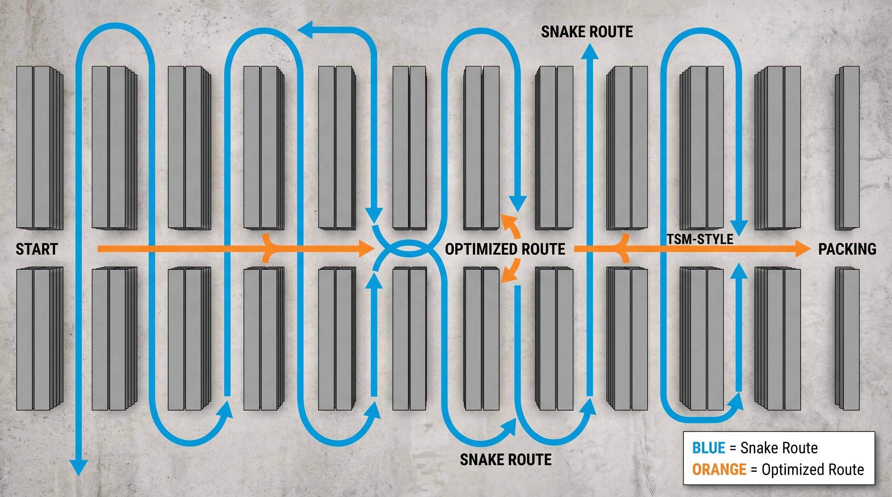

Naar en plukker starter sin runde paa lageret, er der ikke eet korrekt svar paa hvilken raekkefoelge han skal besoegte varerne. Der er mange mulige ruter. Forskellen paa en god og en daarlig rute kan let vaere 20-30% af plukkerens samlede arbejdstid.
To metoder dominerer: slange-metoden og TSM. Begge virker. Men de virker bedst under forskellige betingelser, og de kraever forskelligt af dit setup.
👉 SmartPack bruger TSM-algoritmen til at beregne optimale plukruter. Se hvordan det virker
Slange-metoden: simpel og forudsigelig
Slange-metoden fungerer ved at plukkeren korer igennem gangene i en fastlagt raekkefoelge. Alle gange besoges fra ende til anden, og ruten slanger sig frem og tilbage. Deraf navnet.
Det ser saadan ud i praksis:
- Start ved indgangen, koor til enden af gang 1.
- Drej ind i gang 2 fra enden, koor til begyndelsen.
- Drej ind i gang 3, koor til enden. Og saa videre.
Fordele ved slange-metoden:
- Let at laere. Nye medarbejdere forstar det i lobet af 5 minutter.
- Kraever ikke software. Du kan skrive pluklisterne i Excel og sortere dem efter gang og placering.
- God ved fuld gang-daekkning. Naar ordren indeholder varer i naesten alle gange, er slangen laenge naesten optimal.
Ulemper:
- Ineffektiv ved spredt pluk. Hvis en ordre kun har varer i 3 ud af 12 gange, korer plukkeren igennem 9 tomme gange.
- Ingen optimering af stop-raekkefoelge inden for en gang. Plukkeren kan saette varerne i forkert raekkefoelge og maa vende om.
- Vaekster med lageret. Jo flere gange, des mere ineffektiv ved spredte ordrer.
TSM: korteste vej til alle plukpunkter
TSM staar for Travelling Salesman Method. Det er en algoritme der loser det klassiske problem: givet N punkter paa et kort, hvad er den koreste rute der besoeger alle punkterne?
Paa et lager betyder det: givet de specifikke varer i en ordre, hvad er den korteste rute plukkeren kan tage for at hente dem alle?
SmartPack bruger TSM kombineret med A* pathfinding. Det beregner ikke bare hvilken raekkefoelge varerne skal plukkes i, men ogsaa hvilken vej plukkeren skal koere igennem gangene for at undgaa unodige omveje.
Fordele ved TSM:
- Markant kortere rute ved spredte ordrer. En ordre med varer i 4 ud af 12 gange korer plukkeren typisk 30-40% kortere rute med TSM end med slange.
- Dynamisk pr. ordre. Ruten beregnes specfikt for den ordre, ikke en fast skabelon.
- Skalerer med lagerstorrelse. Jo storre lageret er, des storre er gevinsten.
Ulemper:
- Kraever WMS. Du kan ikke beregne TSM i hoveapet eller paa papir. Det kraever software.
- Kraever korrekt lagerdiagram. Systemet skal vide, hvor gangene er, og hvilke veje der er tilgaengelige. Forkert kortlaegning giver forkerte ruter.
Hvornaar bruger du hvad?
Her er en praktisk oversigt:
| Situation | Anbefalet metode |
|---|---|
| Lille lager under 6 gange | Slange er tilstraekkeligt |
| Stort lager, ordrer med faa varer | TSM giver stor gevinst |
| Batch-pluk med mange varer pr. tur | Slange acceptabel, TSM marginalt bedre |
| Ingen WMS | Slange-metoden |
| WMS med TSM-stoette | TSM altid |
Hvad det betyder i kroner
Lad os sige du har 2 plukkere der each plukker 200 ordrer om dagen. Gennemsnitlig plukketid er 3 minutter pr. ordre med slange-metoden. TSM reducerer det til 2 minutter og 15 sekunder.
Det er 45 sekunder pr. ordre. Ganget med 400 ordrer om dagen er det 300 minutters sparet tid dagligt. Det er 5 timer. Til en timelon paa 175 kr. er det 875 kr. om dagen, eller knap 190.000 kr. om aaret i spart lonudfgift.
Og det er kun plukketid. Hertil kommer faerre fejl, fordi en klar rute goer det nemmere at holde koncentrationen.
Saadan fungerer det i SmartPack
I SmartPack vaelger du plukprofil naar du starter plukjobbet. Profilen bestemmer om systemet bruger slange, TSM eller en punktbaseret algoritme. Du kan have flere profiler, fx en til eksprespakker og en til normale ordrer.
Systemet tegner ruten paa et lagerdiagram paa skraermen, saa plukkeren altid kan se, hvor han er og hvad der er naeste stop. Plukkeren scanner placering for at bekraefte, at han er paa det rigtige sted, inden han tager varen.
Du kan teste dine historiske plukkeruter i SmartPacks lager-designer og se, hvad TSM ville have sparet dig i gangafstand sammenlignet med din nuvaerende metode.